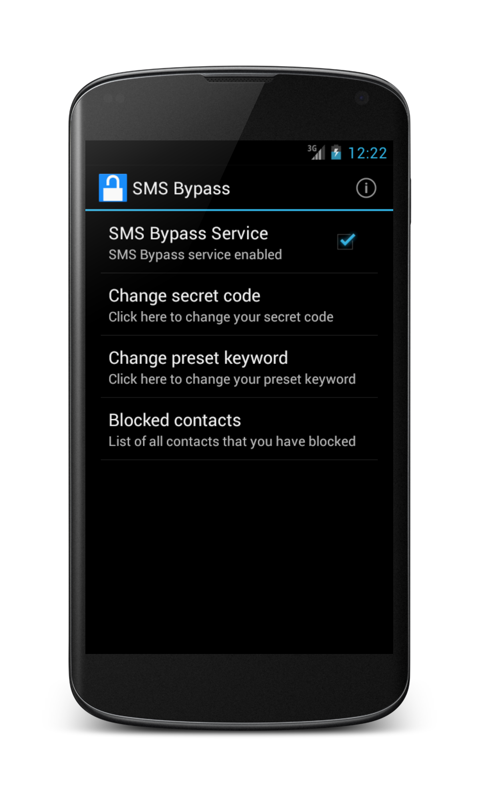

Introduction
Many times we forget our android screen lock gesture pattern or password or a prankster changes it without notifying you. In such cases, this app allows you to remotely bypass your phone's screel lock by sending a SMS. It removes your gesture pattern or password after receiving a preset keyword along with a secret code via SMS. SMS Bypass app requires root.
Using SMS Bypass
- First, make sure you give permanent root access to the app.
- Change the secret code to your preferred choice. The default password is : 1234
- To reset your screen lock, send the following message from another phone:
secret_code resetExample:
1234 reset - Your phone will restart and your lock screen will be removed.
- You can also block contacts to avoid misuse of the app.
Note:There is a space between your secret code and reset. Also the secret code is case sensitive. There is an option available to change the preset keyword. Default is : reset
Note: If you see the the gesture pattern grid after restarting, don't worry. Just try any random pattern and it should unlock
Credits
Developed by Miroojin Bakshi.